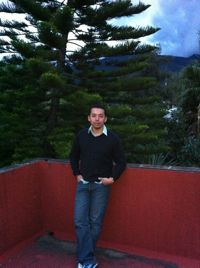

Many graduate students from other institutions in the U.S. and abroad have visited the AMNH Arachnology Lab in the past, often funded in part by the AMNH Small Grants program (Annette Kade Fellowships, Collections Study Grants and Theodore Roosevelt Memorial Fund). If you are interested in applying for small grants to visit the AMNH, please visit the Richard Gilder Graduate School.
 |
Jairo A. Moreno-González Ph.D. Student Museu de Zoologia, Universidade de Sao Paulo, Brasil 2019 Jairo is a PhD. candidate at the Instituto de Biociencias, Universidad de Sao Paulo, Sao Paulo, Brazil. His research interest are focused on systematics and evolution of some arachnid orders such as Scorpiones (Buthidae: Tityus), and Pedipalpi (Schizomida, Uropygi and Amblypygi). His PhD. project deals with the systematic revision of Tityus (Archaeotityus) using phenotypic and genetic evidence. He visited the AMNH for six months to examine material and score morphological characteres for his thesis disseration. |
 |
Andria de Paula Santos da Silva Ph.D. Student Instituto de Biociencias, Universidade de Sao Paulo, Brasil 2019 Andria's Ph.D. project deals with the systematics of the scorpion genus Ananteris (Buthidae). She visited the AMNH collection to examine a large number of these scorpions and generate morphological data. |
 |
Catalina Romero Ph.D. Student Universidad Nacional, Colombia 2019 Catalina spent a few months visiting the AMNH collections to examine specimens and collect morphological data for her Ph.D. thesis on pseudoscorpions of the family Whitiidae. |
 |
Miguel Medrano Ph.D. Student Museu Nacional, Universidade Federal do Rio de Janeiro, Brasil 2019 Miguel spent a week at the AMNH examining type specimens for his Ph.D. project on systematics of Cosmetidae (Opiliones, Laniatores). |
 |
Jahnavi Joshi Post-Doctoral Fellow Natural History Museum, UK 2019 Jahnnavi visited the AMNH to examine a series of old centipedes for an ongoing research project at the Natural History Museum in London. |
| Aaron Goodman Master Student California Academy of Sciences, USA 2018-2019 Aaron is mainly interested in scorpion systematics. He came to the AMNH to generate morphological data for his master dissertation on the genus Centruroides (Buthidae). |
 |
Stephan Schaffrath Ph.D. Student University of Cologne, Germany 2018 Stephan spent three months at the AMNH generating DNA and morphological data for his Ph.D. thesis, focused on the scorpion genus Euscorpius (Euscorpiidae). |
 |
Carlos Albeto Martinez Mu�oz Ph.D. Student University of Turku, Finland 2018, 2019 Carlos main research interest is focused on Myriapods. He came to the AMNH to examine and organize a series of old types described by Chamberlin. |
| Callum Mclean Ph.D. Student Manchester Metropolitan University, UK 2018 Callum visited the AMNH collections to examine various species of Amblypygi for his doctoral thesis, focused in biomechanics of predatory structures in arthropods. |
 |
Shlomo Cain Msc Student University of Haifa, Oranim, Israel. 2018 Shlomo visited the AMNH for three months to examine scorpions of the genus Buthacus (Buthidae) for his master dissertation. |
 |
Ivan Magalhaes Doctoral fellow, Division Aracnologia Museo Argentino de Ciencias Naturales "Bernardino Rivadavia" - CONICET, Argentina 2017 Ivan is a PhD candidate at the Museo Argentino de Ciencias Naturales "Bernardino Rivadavia", Argentina. His research focuses on spider systematics and its interface with their evolution and biogeography. His current project aims at resolving the systematics of crevice weavers (family Filistatidae), a group of shy and little-studied spiders most diverse in dry subtropical areas. His is also interested in the systematics of sand spiders (Sicarius) and spiny orb weavers (Micrathena). |
 |
Gerardo Contreras Instituto de Biolog�a, Universidad Nacional Auton�ma de M�xico (IBUNAM), Mexico City 2015, 2016, 2017 Gerardo visited the AMNH to examine the collection of the North American scorpions of the genus Vaejovis and relatives, and score characters for his phylogenetic analysis. He returned a second time to generate DNA sequences in the molecular lab. |
 |
Rodrigo Monjaraz Ruedas Instituto de Biología, Universidad Nacional Autonóma de México (IBUNAM), Mexico City 2014, 2016 , 2017 Rodrigo is studying the Schizomida fauna of Mexico. He visited the AMNH to examine the schizomid holdings of the collection and score morphological characters for his Ph.D. research. |
 |
Tebogo Ledwaba Ditsong National Museum of Natural History, Pretoria, South Africa 2017 Tebogo visited the AMNH for 2 months to digitize the AMNH collection of African scorpions and part of the Karoo BioGaps Grant funded by the South African National Research Foundation. |
| Jesus Alberto Cruz-Lopez Instituto de Biología, Universidad Nacional Autonóma de México (IBUNAM), Mexico City 2017 Jesus visited the AMNH to examine the collection of mexican harvestmen (Opiliones) as part of his dissertation research. |
 |
Ricardo Botero-Trujillo Doctoral fellow, Division Aracnologia Museo Argentino de Ciencias Naturales "Bernardino Rivadavia" - CONICET, Argentina 2016 (Theodore Roosevelt Memorial Grant) Ricardo Botero Trujillo earned his biology degree from the Pontificia Universidad Javeriana, Bogot�. While an undergraduate student, he became interested in arachnids and started working on scorpions from his native country, Colombia. Gradually, hooded thick-spider (order Ricinulei) and sun-spiders (order Solifugae) became part of his research interests. After a 5-year period working in the pharmaceutical industry, Ricardo moved to Buenos Aires, Argentina to start his Ph.D. His doctoral thesis consists of a taxonomic revision and phylogenetic analysis of the South American sun-spider family Mummuciidae. After being awarded a Theodore Roosevelt Memorial Grant, Ricardo visited the AMNH to study the collections of the groups he works on. |
 |
Dulce Flor Piedra Instituto de Biolog�a, Universidad Nacional Auton�ma de M�xico (IBUNAM), Mexico City 2016 Dulce came to examine the collection of Pseudoscorpiones for her dissertation research. |
 |
Francisco Salgueiro Sepulveda Instituto de Biolog�a, Universidad Nacional Auton�ma de M�xico (IBUNAM), Mexico City 2016 Francisco spent a month at the AMNH to study the collection of tetragnathid spiders for his dissertation. |
 |
Diego Barrales Instituto de Biolog�a, Universidad Nacional Auton�ma de M�xico (IBUNAM), Mexico City 2016 Diego visted the AMNH to examine material belonging to the species Mastigoproctus giganteus especially from localities within the United States. His findings will be incorporated into a morphological analysis used for a species delimitation project. |
 |
Samuel Mwangi West Texas A&M University, Canyon, TX National Museums of Kenya, Nairobi 2005, 2016 (respectively) (Theodore Roosevelt Fellowship, Richard Lounsbery Foundation, Collections Study Grant) Samuel's M.Sc. research focuses on the diversity of Kenyan scorpions of Kenya. As student at the National Museums of Kenya, Nairobi, he visited the AMNH for training in the Molecular Systematics Laboratory. He later returned to the AMNH to examine and photograph specimens for his Masters research at West Texas A&M University. |
| Bastian-Jesper Klußmann-Fricke University of Rostock, Germany 2015 (Annette-Kade Fellowship) Bastian visited the AMNH to study the respiratory and circulatory systems of camel spiders (Solifugae) using osmium tetroxide staining, corrosion casting, and microCT. |
 |
Gustavo Silva de Miranda Natural History Museum of Denmark, University of Copenhagen 2014 & 2015 Gustavo visited the AMNH twice during his Ph.D. to work on the collection of whip spiders (Amblypygi) for his revision of the family Charinidae. He was trained and generated DNA sequence data from charinid samples in the AMNH molecular lab. |
Ingrid Catalina Romero Ortiz
Universidad Nacional de Colombia, Bogota
2015
Ingrid Catalina visited the AMNH to study the pseudoscorpion holdings and types as part of her graduate research on their taxonomy and systematics.
| Daniela Ramírez Instituto de Biología, Universidad Nacional Autonóma de México (IBUNAM), Mexico City 2014 Daniela visited the AMNH to examine the collection of tarantula spiders (Theraphosidae) as part of her Ph.D. research. |
|  | Carlos Santibañez-López Instituto de Biología, Universidad Nacional Autonóma de México (IBUNAM), Mexico City 2009, 2011, 2012 & 2014) (Collections Study Grant, Theodore Roosevelt Memorial Grant) Carlos revised the genus Diplocentrus (Diplocentridae) for his Ph.D. and has studied the taxonomy of other scorpions occurring in Mexico. He first visited the AMNH examine the collection of Diplocentridae and later returned to extract, amplify and sequence DNA from Diplocentridae, and to score a morphological matrix for phylogenetic analysis. |
Stephan Schaffrath
University of Cologne, Germany
2013-2014
Stephan is investigating the chemical composition of scorpion venoms, with a view to using species-specific signatures for systematics, for his Ph.D. He visited the AMNH to work receive training in the DNA isolation, amplification and sequencing.
| Rene Barba Instituto de Ecolog�a y Sistem�tica, Havana, Cuba 2012 (Collections Study Grant) Rene's research focuses on the pseudoscorpion families Sternophoridae, Olpiidae and Garypinidae. He visited the AMNH collections to examine and image type and nontype material from the Caribbean. |
Roberta Engel
University of Connecticut, Storrs, CT
2012
Roberta's research focused on the systematics of pseudoscorpions. She visited the AMNH to examine the holdings of Australian pseudoscorpions.

| Humberto Yoji Yamaguti Universidade de São Paulo, Brazil (2009, 2011) Humberto conducted a revision and phylogenetic analysis of the scorpion genus Rhopalurus (Buthidae) for his Ph.D. He visited the AMNH to extract, amplify and sequence DNA from Rhopalurus samples and to use materials to score characters. |
Patricia Carrera
Universidad Nacional de Cordoba, Argentina
2009
(Collections Study Grant)
Patricia studied mating behavior and sexual selection in bothriurid scorpions for her Ph.D. She visited the AMNH to study the structure and homology of the scorpion hemispermatophore.

| Jesus Alfonso Ballesteros Chavez Universidad Nacional Autonóma de México, Mexico City 2008 (Collections Study Grant) Jesus' M.S. research aimed to reconstruct the phylogenetic relationships of the species belonging to the Neotropical whip spider genus Paraphrynus (Amblypygi) and its relationship with the rest of the genera of Phrynidae. He visited the AMNH to study the Neotropical phrynids. He then moved to George Washington University for a Ph.D. on spiders. |
| Fabio Akashi Hernandes UNESP - São Paulo State University, Brazil 2008, 2016 Fabio's main interests are the taxonomy of plant mites (Bdellidae, Tetranychidae, Raphignathoidea) and feather mites (Astigmata), with an emphasis on the taxonomy and phylogeny of the genus Aponychus and related genera (Acari, Tetranychidae). He visited the AMNH to study mite types from several groups. |
| Andrés Ojanguren-Affilastro Museo Argentino de Ciencias Naturales, Buenos Aires, Argentina 2005 & 2007 (AMNH Collections Study Grant) Andrés' Ph.D. research was a revision of the diverse South American bothriurid genus Brachistosternus. He visited the AMNH twice, the first time to extract, amplify and sequence DNA from bothriurid samples and a second time to continue his work on bothriurid systematics. |
 |
Alexander V. Gromov Institute of Zoology, Almaty, Kazakhstan 2007 (Collections Study Grant and NSF BS&I grant) Alex is interested in central Asian solifuges and is revising the family Karschiidae. He visited the AMNH to work on the solpugid collections as part of the Global Survey and Inventory of Solifugae. |
Carsten Kamenz
Humboldt University, Berlin, Germany
2005-2006
(Annette Kade Fellowship)
See Postdocs
| Valerio Vignoli University of Siena, Italy 2004 & 2006 (Theodore Roosevelt Memorial Grant) Valerio revised the taxonomy, ecology and biogeography of Euscorpius for his Ph.D. He visited the AMNH twice to revise the North American scorpion family Typhlochactidae. He also participated in AMNH trips to Benin, Costa Rica, Morocco, Guinea-Bissau and Senegal. |
 |
Christian Wirkner Friedrich-Schiller University, Jena, Germany 2004 (Annette Kade Fellowship) Christian studied the comparative morphology of arthropods from phylogenetic and evolutionary perspectives and, more specifically, organ evolution and transformation, first at Jena University before moving to Rostock University. He visited the AMNH to study the scorpion circulatory system. |
 |
Christina Bisulca University of Delaware, Newark, DE 2003 (Winterthur Art Conservation Fellowship) Christina visited the AMNH during her M.S. in Art Conservation at the University of Delaware, working with the Department of Natural Sciences Conservation. Bisulca surveyed the state of curation of the non-spider Arachnid and Myriapod Collection, resulting in upgrades to the glassware and closures housing the collection. |
 | Amazonas Chagas Jr. Museu Nacional, Universidade Federal do Rio de Janeiro, Brazil 2003 (Collections Study Grant) After his Masters, Amazonas visited the AMNH while in the USA to work at the North Carolina State Museum, Raleigh. At the AMNH, Amazonas studied scolopendromorph centipedes from around the world. |
Lionel Monod
University of Geneva, Switzerland
2002
See Ph.D.s